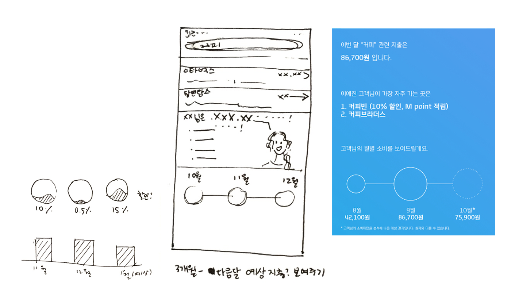

This one-week project made a search function within a credit card-managing mobile application.
The project is under NDA and has modified information.
About the project Duration: 2 weeks Team size: 10~ Reaches: 1,000,000~
As a UX designer, I conducted case studies, ideation, and prototyping of a search function embedded in the monthly spending section of the application. Specific tasks included case studies, user interviews, flow diagrams and mockups.
Process
Case studies
The project goal was to 'design a search function within a monthly activity tab'. The tap shows a user's credit card usage during a certain month, including where, when and how much the person has paid with the card. First, I searched three existing banking applications, none of which had a search function specifically for a monthly spending. Well, that made sense, because usually search function is for a large amount of data. From the guerilla survey I conducted, the number of transactions per month ranged from 20 to 200. This is too small to be a search database.
Case studies on monthly spending page. From the left: BoA, Venmo, Alipay. Note that none of them has a search function in their monthly activities tab.
Ideation
So, I stepped back and thought about why users would visit the particular tab, and if there was a search function what they would use it for. First of all, the information in the tab includes dates, amount, places, and accumulation of the amount. When would the users need these kinds of information?
Sample scenario - "What if the users want to remember the place they spent money?"
After sharing insights with the team, I finalized the scenario to be identifying spending patterns. Users notice the overlaps in the places, and they want to use that information to find out their spending patterns and apply it for future savings.

A piece of a wireframe - "I will predict your coffee consumption next month"
Flow diagram for the search function.
Final Thoughts
It was a very exciting week that I got to solve a problem by researching and ideating. What I especially enjoyed was the opportunity to get industry-specific feedback from the designers who are working in the field. For example, you have to be very careful about the placement of recommendations, since the application is about mobile banking, even if you recommend some benefits for the customers, they might think it is for the company's benefit. As a post side project, I am making interactions for the application.